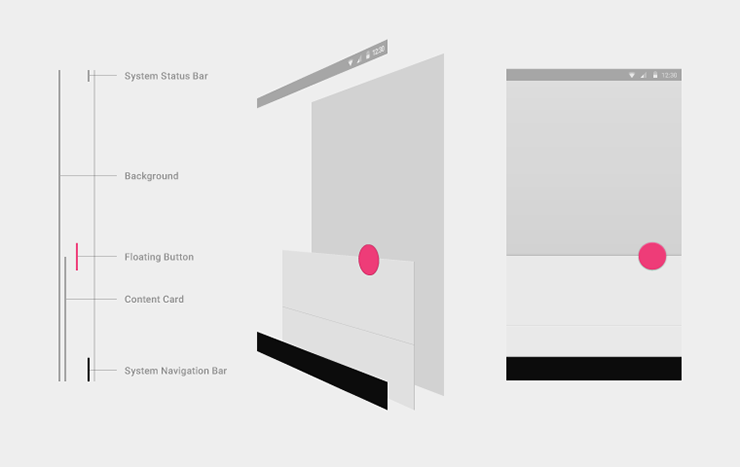

Portals? uPortal!? What is this Béchamel?
~ About me ~
Christian Cousquer
~ a. k. a. ~
‚Äú@prairycat” üêà
~ a. k. a. ~
‚Äúthe hood” üòÑ
~ a. k. a. ~
‚ÄúLong range shooter”
~ Recently known as ~
‚ÄúDr House”
Because of the cane üåÇ...
~ Senior Frontend Engineer
at UPMC IT Dept ~
Division “research and development”, uPortal admin.
Has been working on uPortal since 2005
~ uPortal Steering Committee
Community Rep. ~
Spring 2016 - 2 years
For the French Consortium ESUP
~ Mobile & Accessibility Expert ~
Formely a Professional Comedian
{
"name": "Christian Cousquer",
"priorities": [
"family", "work", "friends", "cats üêà", "DOM api", "ES6", "CSS", "uPortal", "WebVR"
],
"location": "Paris, France",
"work": "UPMC",
"role": "Software Engineer",
"hobbies": [
"theater", "books", "DIY", "movies", "üòÑ", "play with my son", "Maths", "History"
]
}
~ Many Thoughts to my UPMC Fellows & Teachers ~
“When I'm working, I always think and thank:
Y. Epelboin, T. Koscielniak, A. Pruvost, P. Alves, B. Somphone, K. Lefranc, Y. Roualdes, L. Auxepaules,
my family
and all the teachers, who have teached me things”
Francis Lagneau üíª,
a. k. a. Little Marquis,
a. k. a. Cherub,
a. k. a. Good Manners.
In some circles, he’s also known under the alias Requiem,
a. k. a. Bazooka,
a. k. a. Falballas,
a. k. a. Biff,
also known as beautyful Helluva Punch.
as clout.
It's curious how mean can people be...
very young when he earned the nickname...
Trinitrotoluene.üí•
~ This presentation will be the continuation of the two last year's presentations ~
“Feedback on the deployment of uPortal4.2+ responsive at UPMC”
https://www.slideshare.net/prairycat/deploying-responsive-uportal-42-at-upmc-sorbonne-universits“On the road of multi-tenancy portal at UPMC”
https://fr.slideshare.net/prairycat/on-the-road-of-multi-tenancy-portal-apereo-2016~ UPMC - Sorbonne University
Context ~
~ Merger of Paris-Sorbonne & Pierre et Marie Curie universities ~
In 2018, the merger of Paris-Sorbonne and Pierre et Marie Curie universities will transform Sorbonne University into a fully-fledged university with three autonomous faculties: Humanities and Social Sciences, Sciences and Medicine.
~ UPMC Portal Steering Committee ~
After 4 years of absence, a new one isn't yet constituted, because of the complexity of the merger of the two Universities
“Try to do the best, M. Cousquer, keep on, If you think an improvement need to be done, do it and share it”Conception and Design under null constraint, with low priority
~ Something you need to know about the French Context ~
When a Public French university can spend $1 an American University can spend $10 - $60.
When a French university can assign 1 or 2 people on a project, some American universities have the possibility to assign 4 to 6 people on the same project.
~ A Portal seen under a Collective Intelligence Approach ~
~ Collective Intelligence? - Concepts ~
- Perception of the whole / Holopisme [fr_FR]
- A shared Identity (feeling of a Group MemberShip)
- A Social Contract
- Common objectives
- Economics of the Gift ("I'don't keep things just for me" - idea of Sharing)
- Link objects in circulation (something in movement inside and between)
- Learning Organization
~ Perception of the whole ~
If uPortal was an architectural concept…
uPortal 4.0 Universality ~
uPortal 4.3+ Respondr ~
~ A shared Identity ~
I'm always amazed by the fact that lot's of US Portals have a Mascott
UPMC is one of the only french universities which has a Mascott for its portal. The UPMC's Mascott: "The curious"
~ Social Contract ~
The French State publish every two years the SDET 6.0
“Sch√©ma Directeur des Espaces num√©riques de Travail”: “Master Plan for Digital Work Spaces”
~ Master Plan for Digital Work Spaces ~
One Url for all services
~ Digital Work Space ~
~ A French Digital Work Space Portal: "ENT" ~
- Needs to work on Mobile and Desktop
- Must comply with State Security recommendations
- Can be customized by the user
- Needs to meet WCAG 2.0 AA
As a first impression, I would say...
it looks pretty weird.
The Mexican made it when he was in his prime.
But we had to stop production. People went blind...
It was bad for business.
~ W3C Web Content Accessibility Guideline 2.0 ~
Digital accessibility is based on four main principles:
- a perceptible site;
- a usable site;
- an understandable site;
- A site that is compatible with all assistive technologies.
Référentiel Général d'Accessibilité des Administrations 3 - 2016
“RGAA 3 - 2016”: French National Guideline Compliance to the WCAG 2.0 + Wai Aria
ADA is essential for people with disabilities and also benefits seniors whose abilities change with age. Digital accessibility is part of a process of equality and is a fundamental social issue in order to guarantee all the access to online information without discrimination.
RGAA 3 - 2016RGAA 3 - 2016 (in english)
~ uPortal Better accessibility ~
- Availability: uPortal 4.3 (rel-4-3-patches) & uPortal 5.0.0
- Federal Guideline Compliance [US ; UK ; FR ; CA ; ...]
- This should not be viewed only as an attempt to be in compliance with the law
- “Accessibility is usability and a better experience for all.”
- Many many Thanks to Christian Murphy, Drew, Benito, and the great team at Oakland University (Aaron(s), Brandon, Daniela, Corey & C°)
~ Screen readers are a tool a lot of different people like to use
Screen readers are not just for the blind
Some operate screen readers to assist their understanding of an interface. Others may be visually dyslexic or have low literacy. There are even those who have little physical or cognitive trouble understanding an interface who simply prefer to have it read out to them sometimes.
In France (pop: 67,5 Millions), the INSSE considers that there is 12 Millions of people with disabilities
~ Keyboard Requirements and Specific Mobile Requirements ~
There is some correlation between Mobile Site / App issues and the WCAG 2.0 Guidelines...
Mobiles Sites are not specifically covered by WCAG 2.0
For example, although WCAG 2.0 requires Sites to be accessible to keyboard user, it does not specify that it should also be accessible to the mouse or touchscreen user...
Do not try to mimick Native App Interactions (Complex gesture-based interactions, etc.) Complex gesture-based interactions involve several successive or synchronized movements. For example, a swipe followed by several taps. These interactions may present insurmountable difficulties for some users.
~ Email Preview Refactor ~
EMAILPLT-190: lot's of a11y Improvements in RWD
available in project master branch.
~ Navigation flow, Interactive Story ~
RWD: Always Think where the keyboard focus goes after each interactions - specially in Responsive Web Design, when something moves, appears or disapears on screen.
~ Debugging focus Tips ~
This logs the currently focused element, useful because opening the Devtools blurs the activeElement
$('body').on('focusin', function() {
console.log(document.activeElement);
});
~ tabindex problem ~
- Elements with tabindex="0" are part of the natural tab sequence
- Elements with tabindex="-1" are not, but are focusable with scripting
- Elements with tabindex=">0" are never a good idea
~ aria-flowto attribute ~
- Creates a navigation flow from one element to another
- Takes the id value of the element to be navigated to
- Need to manage also the focus in JavaScript with element.focus() and warn user before in the label: “Go up to Selected Message ToolBar”
Mozilla's Gecko rendering engine main flow
HTML5 Rocks: How browsers work by Tali Garsiel and Paul Irish
What is a browser engine? by Potch
Accessibility and Performance by Marcy Sutton
~ Manipulating the DOM ~
- Browser parses the HTML and builds the DOM
- Browser uses the DOM to build the accessibility tree
- Browser updates the DOM in response to user interaction or scripted events
- Browser responds to changes in the DOM and updates the accessibility tree
- Assistive technologies listen for changes in the accessibility tree and respond accordingly
~ DOM tree ~

~ Accessibility tree ~

~ If you use the WAI-ARIA role “application”, please do so wisely! ~
two-part user interaction model: "virtual cursor or browse mode" & "Forms mode or focus mode"
If you make up a user interface solely of elements that are part of standard HTML, you will most probably not want to use “application” because browsers and assistive technologies provide a standard interaction model for these already and don’t need special support from you in that
Great reference by Marco Zehe (Mozilla accessibility)“..the mobile world is nothing universal, quite the contrary. If the number of platforms is measured, their intrinsic characteristics (eg resolution) complicate the technological landscape enormously. If the Responsive Web Design (RWD) allows reasonable adaptations, for accessibility it's another thing. The world of web-based mobile interfaces is unstable and highly scalable, while support for "web standards" is just beginning to stabilize and the "touch" is not yet standardized by the W3C. To these difficulties is added the important pace of the updates, in particular of the browser part, on which one regularly observes regressions. There's also a big difference compared to desktop platforms where there are operating system-independent technologies. On mobile platforms, assistive technologies are a component built into the operating system itself... These assistives technologies are particularly optimized for the host system. This creates a new situation where a web application that is functional and accessible on a desktop computer can cause difficulties when accessed via a mobile interface, even if it comes from the same publisher. ”
On foot, they'd have had a chance.
But no one likes mobile ground combat anymore.
The infantry spirit is dead.
It's a shame.
~ Material Design ~
~ x, y, z axis ~
- Think in terms of three-dimensional environment containing light, material, and cast shadows.
- All objects have x, y, and z dimensions.
- All objects have a single z-axis position.
- Key lights create directional shadows, and ambient light creates soft shadows. 

~ Material Design in uPortal 4.3+ WIP ~
“I don't want to be alone in the community to adopt Material, so I was waiting for Corey's excellent PRs on Feedback FBP-37 ”~ But I've got a problem ~
it seems that one Faculty wants to be in Bootstrap, the two others wants to be in Material Design...
" How can portlets be in the same time in Bootstrap and in Material Design?"
~ Make look jQuery / Bootstrap look like Material Design in uPortal 4.3+ ~
Only CSS patches on top of Bootstrap / jQuery within wolverine.less.
in a few days, every buttons, tabs, list, table, forms can look like MD without modifying the Portlets markup or adding a new dependancy
~ A last word on rendering ~
- Simply move your CSS’ link elements to as close to the top of the HTML document as you can. Seriously, it can make a difference.
- Don’t put scripts at the bottom any more: make use of async and defer attributes
- Make use of resource hints to tell the browser to prioritize things out of regular order (or for subsequent navigation).
~ A word on CSS, LESS, SASS, PostCSS ~
- Last Year, I've told you about
while()in LESS, SASS, etc. - This Year, do you know that CSS has CSS Custom Properties with
var()and"--xx:"properties, and cancalc()also? - CSS should be seen not only for doing shiny/ugly things... It's a language for Interactivity too and There is rarely regression in CSS.
~ A word on Non-JavaScript ~
“..Most JS is written to run in and interact with environments like browsers. A good chunk of the stuff that you write in your code is, strictly speaking, not directly controlled by JavaScript. That probably sounds a little strange. The most common non-JavaScript JavaScript you'll encounter is the DOM API...You Don't Know JS: Up & Going, chap 2 #non-javascript
Another example is the various HTML5 capabilities, such as the File API (I/O), Web Storage, Canvas or WebGL APIs, Typed Arrays or the Shadow DOM (and much more‚Ķ).”
My good man. Take up Mr Naudin's bags, please.,
YES, SIRE! [in English]
~ Some i18n bug: accentuated characters ~
~ i18n of CMS Portlet ~
“How internationalize simple Static Content in Advanced CMS Portlet.”~ Work in progress WIP ~
Internationalization of Advanced CMS Portlet
- Manage i18n in Html5, JavaScript, in VirtualDOM with 2KB of JS in a single portlet-definition, in Material Design, with Rich UI
- Separation of data from the view, depending on the lang attribute of the html element
- Manage a11y, keyboard navigation
- Templates of portlet-definition. A portlet can be done in 1 hour
- Don't assume language dictates location and location dictates the language, Let the user choose: when the user change his local language, the portlet is displayed in this language according to the user's customization...
- Everythings (CSS, HTML, JS) is gathered in a single file -> no dispersion and everything is scoped. Very easy to configure, debug and fix
Debugging JavaScript
üïê I know what / where it is!
üïë No I don't‚Ķ
üïí I know what / where it is!
üïì No I don't‚Ķ
üïî I know what / where it is!
üò¥
Beyond Console Debugging Tricks
~ hyperHTML: A Virtual DOM Alternative ~
Author: Andrea Giammarchi - @WebReflection
Open-source: MIT Licence
Virtual-dom allows you to update a view whenever state changes by creating a full VTree of the view and then patching the DOM efficiently to look exactly as you described it. This results in keeping manual DOM manipulation and previous state tracking out of your application code, promoting clean and maintainable rendering logic for web applications
Medium: hyperHTML: A Virtual DOM Alternative
Github: https://github.com/WebReflection/hyperHTML
HeyheyHeyhey 50 kilos of potatoes
a sack of sawdust...
and 25 quarts of 3 stars Napoleon brandy came out of the alembic
Jo the quiver was a true magician.
~ VideoLive Refactor ~
Live Video courses (first year of Medicine) and Live Video Events within the Portal
Last Summer's two month work, we've renewed the all Video back end workflow to broadcast the medecine Video Courses in Live and VOD and intalled also OpenCast, a new LMS Moodle for the faculty of Medicine, and done two portlets for the Live Video and a moodle portlet and a developement in Moodle.
~ Moodle Portlet ~
~ Opencast deployment ~
We use Apereo Opencast to manage: the schedule of Live broadcast, the metadata, and the trans-coding of the VOD
~ The GPS Methaphor : Microservice (?) ~
The Live Video is within the Portal And also within Moodle.
It can be reached in several way, several routes to achieve your goal.

I wish I could get some real food.
~ About WebGL ~
“..WebGL is often thought of as a 3D API. People think "I'll use WebGL and magic I'll get cool 3d". In reality WebGL is just a rasterization engine. It draws points, lines, and triangles based on code you supply. Getting WebGL to do anything else is up to you to provide code to use points, lines, and triangles to accomplish your task.”WebGLFundamentals.org
~ The Pitch (true story) ~
I was worried last year because I was hearing a lot of people telling:
“You kown uPortal, it's an old stuff, we need new ideas, etc.”
I was really annoyed by these things and my 4 years old son Theo saw me worried.
he asks me: “Daddy, what going on?”
and I tried to explain him and Theo told me :
“Wait...”
he ran into his bedroom and came back with a hotwheels car a Chevrolet camaro 1967, and giving me the little car, he told me :
“That's normal, 'cause you need a magical car”
~ Theo WebGL Portlet ~
“How to throw in 3D an OLD american car into an OLD Portal on an idea of a YOUNG boy.”~ Three.js ~
Beginning with 3D WebGL (pt. x4)
https://codepen.io/rachsmith/post/beginning-with-3d-webgl-pt-1-the-scene
~ uPortal Layout and WEBGL ~
Because WebGL Clipspace coordinates always go from -1 to +1 no matter what size your canvas is. I use a Fixed Layout grid not a fluid layout grid inside uPortal or it is possible to put the <canvas> element inside a modal or inside a new window, otherwise there could be distortion of the canvas when a user resize the window.
~ Web Virtual Reality (WebVR) in uPortal - WIP Experimentations ~
~ WebVR in uPortal WIP Experimentations ~
Immersive experience
Mozilla A-FRAME
Facebook ReactVR
Google webvr-polyfill
~ Why that ? ~
Because it's the future, a new interactivity...
if it's possible to draw in 3D a car for a child...
It's possible to draw in 3D other things for teachers in Science, Medicine and Arts, so let's make this possible...
Gentlemen,
I thank you for your attention.